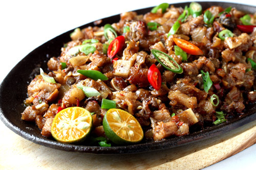

|  | SisigSisig is a great use for your leftover lechon kawali. A delicious medley of tangy, spicy and crispy, it’s perfect for inuman or kainan! |
Ingredients1 tablespoon gingie, chopped 5 cloves garlic, chopped 4 bird's eye chile peppers, chopped 1 onion, diced 1/4 cup Filipino soy sauce 2 tablespoons calamansi juice 2 tablespoons coconut vinegar 4 eggs |
|
| <<< Back to Appetizers | |